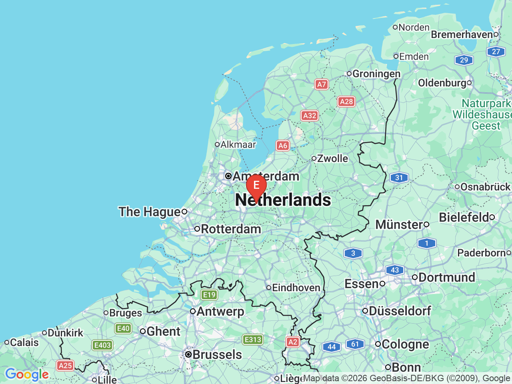

Day 01 · 2026-08-16（日）
荷蘭・阿姆斯特丹 Day 1/6
建置中
在這裡填一句話副標題，簡述這天的重點

行程明細DAY 01
| 時間 | 地點 | 地點 (英文) | 交通方式／班次 | 價格 | 預計停留(分鐘) | 備註 |
|---|---|---|---|---|---|---|
| 地點中文名稱 | Place Name in English | 例如：步行 10 分 | 費用 | 約XX分鐘 | 備註 | |
| 地點中文名稱 | Place Name in English | 例如：地鐵 U2 → 步行 5 分 | 費用 | 約XX分鐘 | 備註 |
每日三餐
住宿資訊
飯店英文名稱飯店當地語言名稱
📍 地址（會自動變成可點擊的 Google Maps 連結）早餐含早餐
Check-in15:00
Check-out11:00
房價約 XXX EUR/晚
訂房代碼訂房確認碼
電話+49 XXX XXXXXXX
備註（例如最近的地鐵站、櫃檯營業時間）
« 前一天Day 02 阿姆斯特丹 »